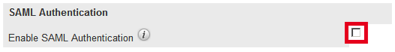
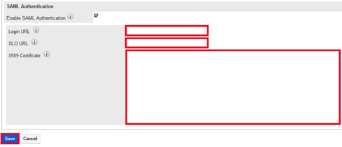

Sign into your SugarCRM instance as an Administrator.
In the upper right corner, select Administrator > Admin. Then, select Users > Password Management.
In the SAML Authentication section, check the Enable SAML Authentication box, as shown below.
Copy the following information into the Login URL field, as shown below.
Sign into the Okta Admin dashboard to generate this value.Copy the following information into the SLO URL field, as shown below.
Sign into the Okta Admin dashboard to generate this value.Copy and paste the following X.509 Certificate, as shown below. Be sure to include the Begin Certificate and End Certificate lines.
Sign into the Okta Admin dashboard to generate this value.
Select the Save button, as shown below.
Done!
Note: IdP-initiated flows, SP-initiated flows, and Just In Time (JIT) provisioning are all supported. For an SP-initiated flow, go to the sign in page. In the pop-up window that appears, enter your Okta credentials and then select the Sign in button.